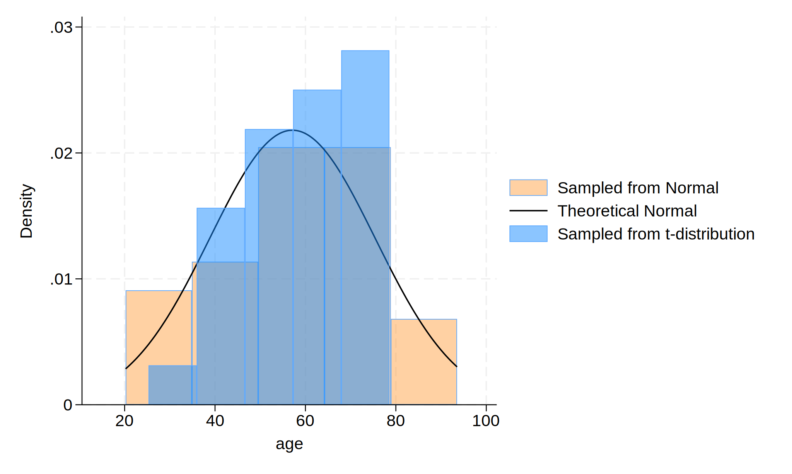

Background:
Comparing between normal distribution and t distribution. Practice embedding stata result and graph in .html.
Methods: Initialze a dataset with 30 observations. Generated an age variable from a normal distribution with a mean age of 57 years old and a standard deviation of 15, and another age variables from a t distribution, compare these two variables with theorical normal distribution in histrogram.
. clear
.
. // Initialize dataset with 30 observations
. set obs 30
. // Create an age variable with from normal distribution with a mean of 57 years
> and a standard deviation of 15.
. gen age = (rnormal() * 15) + 57
. // simulate a t-distribution.
. gen age_t=(rt(_N)*15)+57
.
. hist age, ///
> fcolor(orange%40) /// simulated normal
> addplot(hist age_t, fcolor(midblue%50)) /// simulated t-distribution
> normal /// theoretical normal
> legend(on ///
> lab(1 "Sampled from Normal") ///
> lab(2 "Theoretical Normal") ///
> lab(3 "Sampled from t-distribution") ///
> )
. graph export age_histogram.png, replace

Conclusions: We plot t distribution and distribution of $\text{Age, years} \sim \mathcal{N}(\mu=57,,\sigma^{2}=225)$. We only generate 30 observations, the histogram of t distribution is not perfectly normal.
Footnotes: Results are based on simulated data.